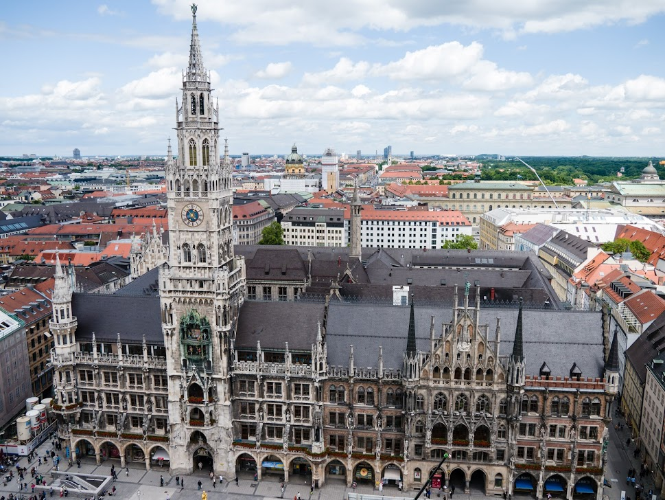

Concediu in Bavaria
Bavaria este, probabil, cea mai frumoasa regiune a Germaniei, una cu care nemtii se mandresc si pe care o prezinta,
in mod logic, ca fiind bijuteria turistica a tarii. Sunt atat de mjulte argumente pentru a petrece un concediu in
Bavaria incat nu-ti sugeram decat sa te urci in masina si sa pornesti la drum: vei ajunge relativ repede si, cu
siguranta, vei avea parte de una dintre cele mai frumoase, curate si linistite vacante din viata ta.
Munchen

Munchen este capitala provinciei Bavaria si poarta catre Alpi. Unul dintre cele mai frumoase orase ale Germaniei,
in care ai muzee de top si arhitectura germana traditionala, un tribut adus trecutului regal bavarez. O portie
consistenta a ceea ce inseamna ospitalitatea, cultura si… berea bavareza o poti avea daca participi la celebrul
Oktoberfest, festival care atrage annual peste 6 milioane de vizitatori.
Alpii Bavarezi

Plimbari, drumetii montane sau schi – Alpii Bavarezi reprezinta principala destinatie de vacanta a Germaniei.
Acesti munti se intind de-a lungul granitei cu Austria si include cel mai inalt varf al tarii: Zugspitze, acolo
unde poti schia pana in luna mai. Printre cele mai cunoscute statiuni din Alpii Bavarezi se numara Oberstdorf,
Füssen, Berchtesgaden si Garmisch-Partenkirchen.
Castelul Neuschwanstein

Poate cel mai faimos castel din lume, Neuschwanstein e localizat in Alpii Bavarezi si pare pogorat direct dintr-o
poveste: regele Ludwig al II-lea a proiectat castelul, cu ajutorul unui designer de teatru. Fa un tur al castelului
si descopera-I minunile, cu tot cu Sala Tronului, in care vei descoperi candelabrul in forma de coroana.
|